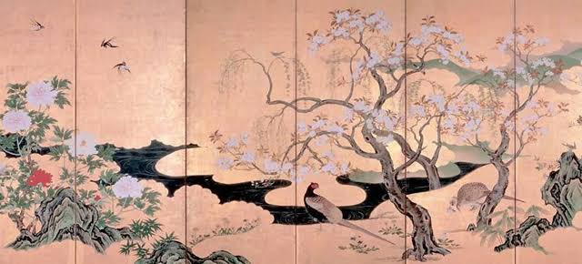
Arte Tradicional
Influências religiosas e natureza na arte clássica japonesa.
Escolha um país ou assunto:
Para localizar uma palavra no texto, use Ctrl+F no computador.
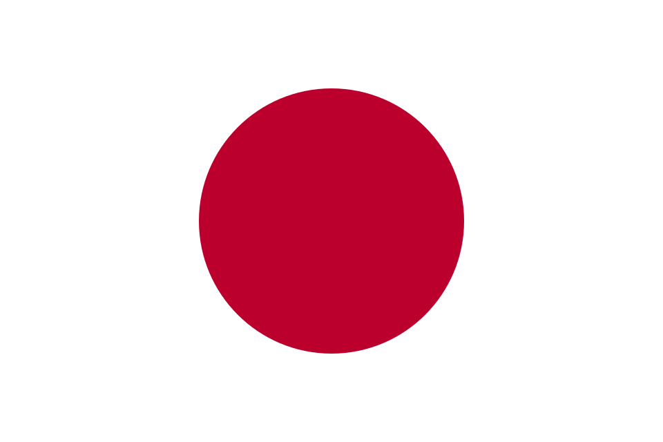
Evolução das Artes Visuais
O Japão possui uma rica tradição artística que se desenvolveu ao longo dos séculos, combinando influências religiosas, culturais e sociais. Suas artes visuais refletem a harmonia com a natureza, o refinamento estético e a capacidade de reinvenção ao longo da história.
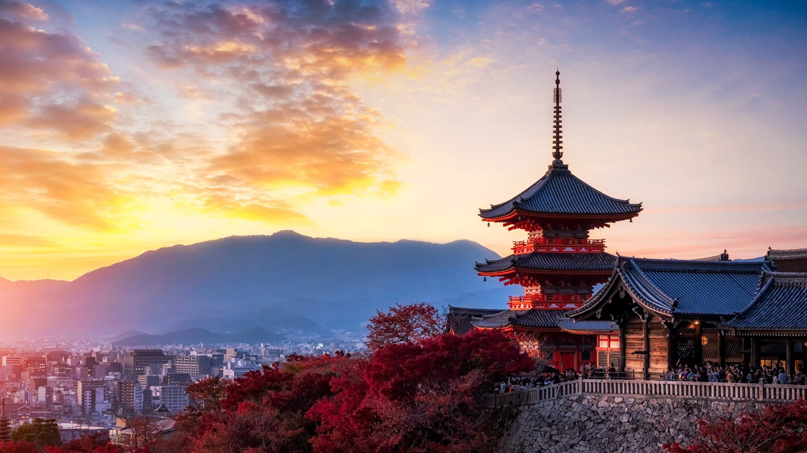

Influências religiosas e natureza na arte clássica japonesa.
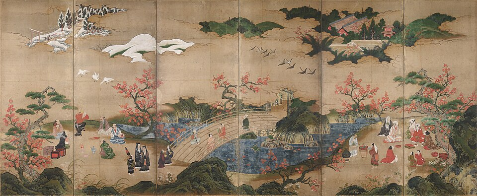
Gravuras que retratam o cotidiano, paisagens e a vida urbana.
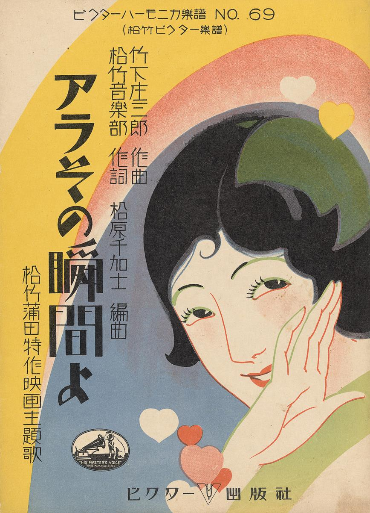
Contato com o Ocidente e novas formas de expressão artística.
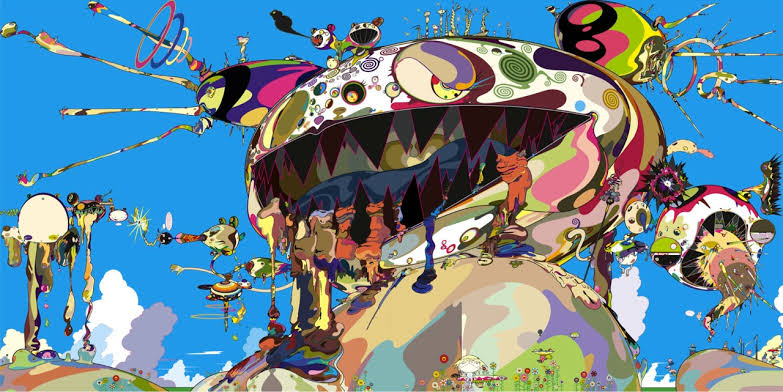
Tradição e inovação em diálogo no cenário atual japonês.

Técnica tradicional que valoriza a simplicidade e a expressão com poucos traços.
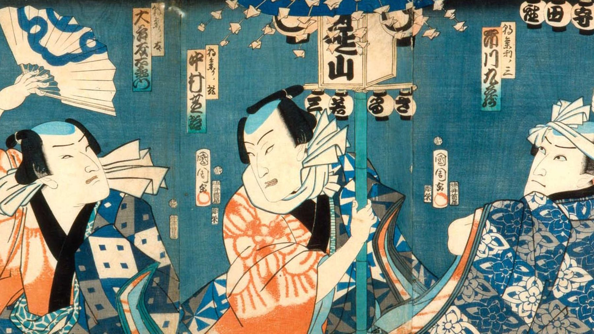
Estilo caracterizado por cores vivas e cenas do cotidiano japonês.

Forma de arte que une escrita, estética e espiritualidade.
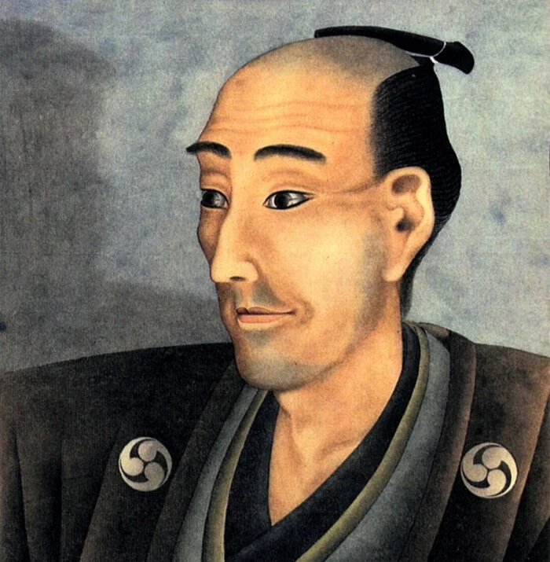
Famoso por suas gravuras, como a icônica “Grande Onda de Kanagawa”.
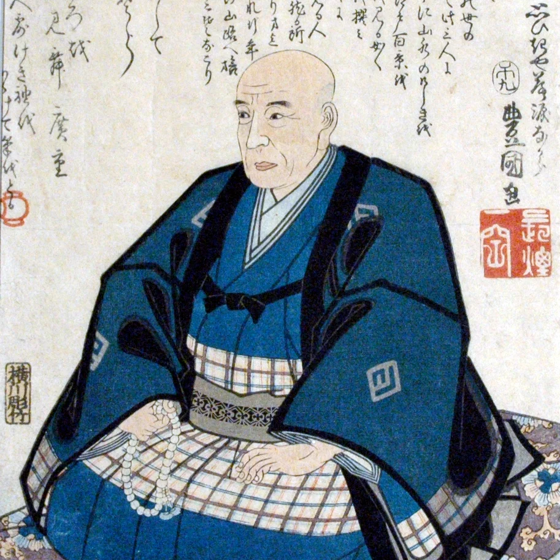
Conhecido por suas paisagens e cenas do Japão tradicional.
Artista contemporânea reconhecida por suas instalações e padrões únicos.
Katsushika Hokusai
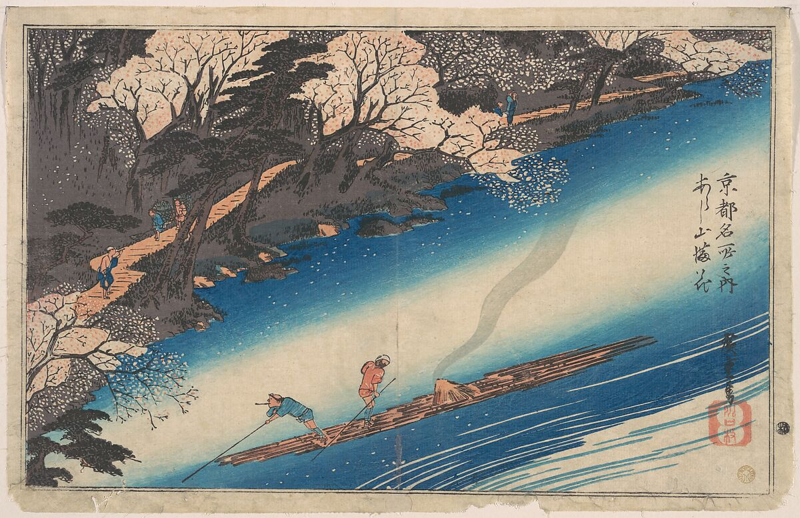
Utagawa Hiroshige
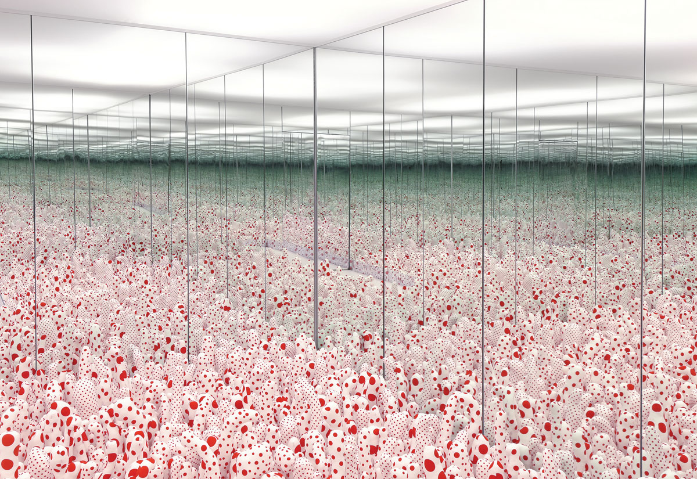
Yayoi Kusama
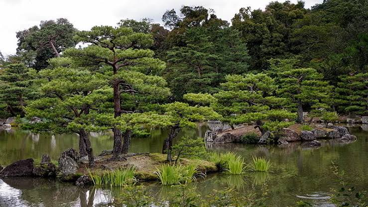
A natureza é um tema central e aparece em muitas obras japonesas.
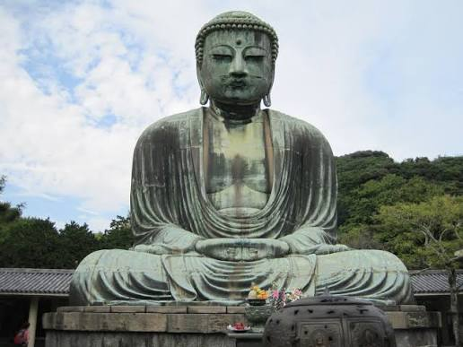
Muitas formas de arte estão ligadas ao zen-budismo e à busca pelo equilíbrio.
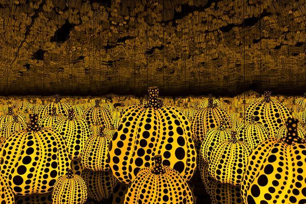
O Japão combina tradições milenares com uma cena artística contemporânea vibrante.